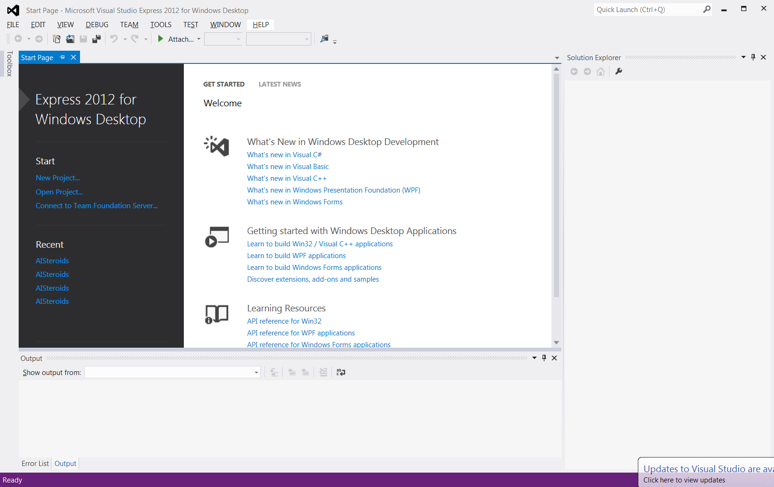

Software Requirements¶
C++11 Compliant Compiler¶
Linux/macOS
icpc (Intel C++ Compiler)
In Linux, the Intel compiler will generally produce the fastest CPU executables (when running on Intel Core processors). Type the following command in a terminal:
$ icpc --version
If gives a version number 16.0.3 (2016 Initial version) or later, you’re all set. Otherwise, we recommend upgrading.
g++
Type the following command in a terminal:
$ g++ --version
If gives a version number 4.4 or later, you’re all set. Otherwise, we recommend upgrading.
Windows
Visual Studio Microsoft’s Visual Studio 2010 or later is recommended.
To check the version:
Help (top tab) -> About Microsoft Visual Studio

CMake¶
To check if cmake is installed:
$ which cmake
To check the version number:
$ cmake --version
The minimum required version is 2.8. However, we recommend to use version 3.2 or later.
CUDA Toolkit¶
CUDA is required to compile the GPU executable in both Windows and Linux. However, is not required to compile the CPU code. To download and install CUDA visit NVIDIA’s webpage:
https://developer.nvidia.com/cuda-downloads
https://developer.nvidia.com/cuda
Please refer to CUDA Developer webpages to select an appropriate version for the desired platform. To install CUDA in Linux root/sudo, privileges are generally required. In Windows, administrative access is required.
To check if nvcc is installed:
$ which nvcc
To check the version number:
$ nvcc --version
The GPU builds of the code requires NVIDIA’s CUDA 8.0 or newer.
MPI (Optional for Standard; Required for MultiSim)¶
An MPI Library is required to compile the MPI version of GOMC in both Windows and Linux. However, it is not required to compile standard GOMC. There are a couple of options to install an MPI library.
We recommend the Intel MPI Library:
The alternative we recommend to Intel MPI is MPICH. MPICH binary packages are available in many UNIX distributions and for Windows. For example, you can search for it using “yum” (on Fedora), “apt” (Debian/Ubuntu), “pkg_add” (FreeBSD) or “port”/”brew” (Mac OS).
$ sudo apt-get install mpich
Another option is the OpenMPI library.
$ sudo apt-get install openmpi-bin openmpi-common openssh-client openssh-server libopenmpi2 libopenmpi-dev